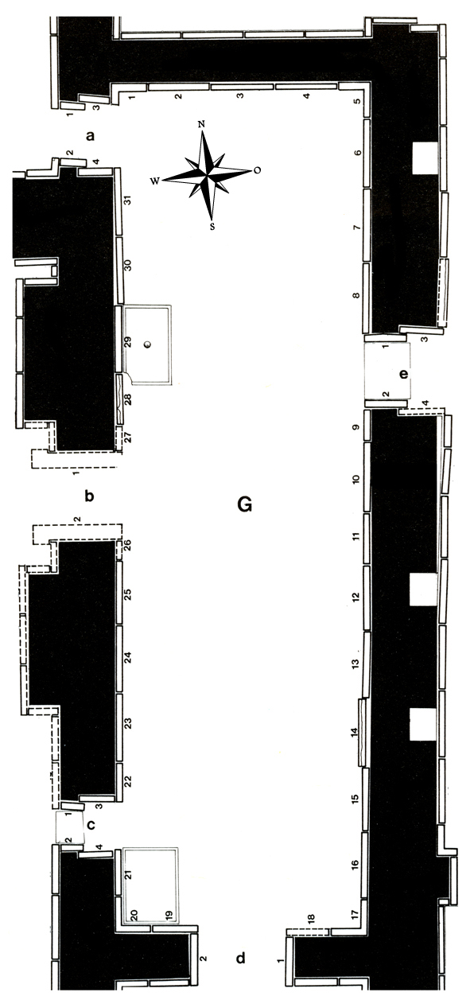

Room G
Room G was excavated by Layard in the summer of 1846. He found the reliefs in this room to be particularly large, well crafted and well preserved: “The colours still adhered to the sandals, brows, hair and eyes. The sculptures were in the best state of preservation; the most delicate carvings were still distinct, and the outline of the figures retained its original sharpness. ... They furnished me not only with a collection of beautiful designs, but also with many new and highly interesting symbolical and mythic signs, and figures.” (Nineveh I, 137-138; cp. also Canby, Iraq 33, 1971, 31-53). Layard found 31 reliefs in the room proper, 14 more in the doors and two lamassu. He sent several of the slabs to the British Museum and chose four of them for his cousin, Lady Guest, at Canford Manor. Four slabs are entirely or mostly lost (G-21, G-28, G-a-2, G-c-3) and four remained in situ – they are now badly damaged and weathered. The rest of the reliefs are distributed over several collections.
Click on G in the middle of the room to see all panels positioned in their respective walls, or on the individual panels along the inner walls and in the entryways to go to CDLI pages associated with them.
 |
Relief Slabs by Collection (duplication results from individual fragments in different places) Arkeoloji Müzeleri, Istanbul, Turkey |